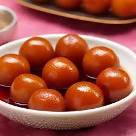

Gulab Jamun
Ingredients:
- 1 cup milk powder
- 1/4 cup all-purpose flour (maida)
- 1/4 teaspoon baking soda
- 2 tablespoons ghee (clarified butter)
- 1 cup sugar
- 1 cup water
- A pinch of cardamom powder (optional, for flavor)
- Oil or ghee for frying
Instructions:
- In a mixing bowl, combine the milk powder, all-purpose flour, baking soda, and ghee. Mix everything well until it resembles a crumbly texture.
- Gradually add a little water at a time and knead the mixture into a soft dough. The dough should be smooth and not sticky. If needed, you can add a little more ghee to achieve the right consistency.
- Shape the dough into small, smooth balls. Make sure there are no cracks on the surface of the balls.
- In a separate saucepan, prepare the sugar syrup by combining sugar, water, and cardamom powder (if using). Bring it to a boil, stirring until the sugar completely dissolves. Simmer for a few minutes until the syrup thickens slightly. Turn off the heat.
- Heat oil or ghee in a deep frying pan over medium-low heat. Once the oil is hot, fry the prepared dough balls (gulab jamuns) in batches until they turn golden brown. Fry them gently, stirring occasionally to ensure even cooking.

Barfi Mava
Ingredients:
- 1 cup condensed milk
- 1 cup milk powder
- 1/4 cup ghee (clarified butter)
- 1/2 teaspoon cardamom powder (optional, for flavor)
- Chopped nuts (such as almonds, pistachios) for garnishing
Instructions:
- Heat a non-stick pan on medium heat and add the ghee to it.
- Once the ghee melts, add the condensed milk and milk powder to the pan.
- Stir the mixture continuously to avoid any lumps and cook it on medium-low heat.
- Add the cardamom powder (if using) to the mixture and mix it well.
- Grease a square or rectangular dish with a little ghee to prevent sticking.
- Allow the barfi to cool and set at room temperature for a couple of hours or until it solidifies.
- Once the barfi is completely set, cut it into small square or diamond shapes using a sharp knife.